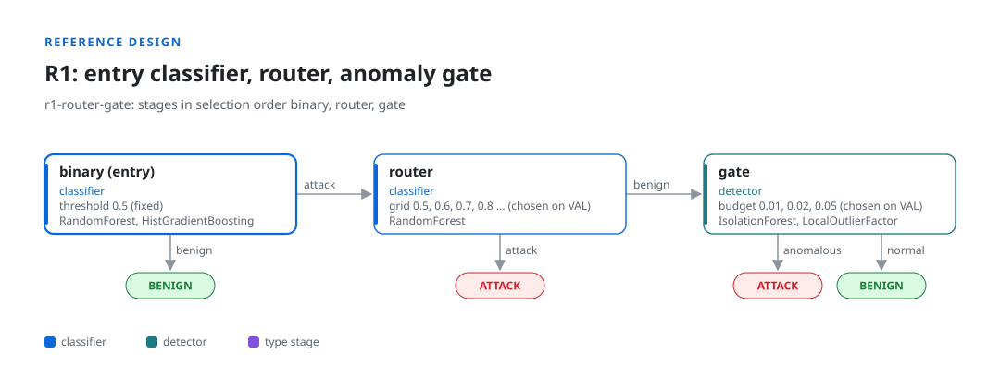
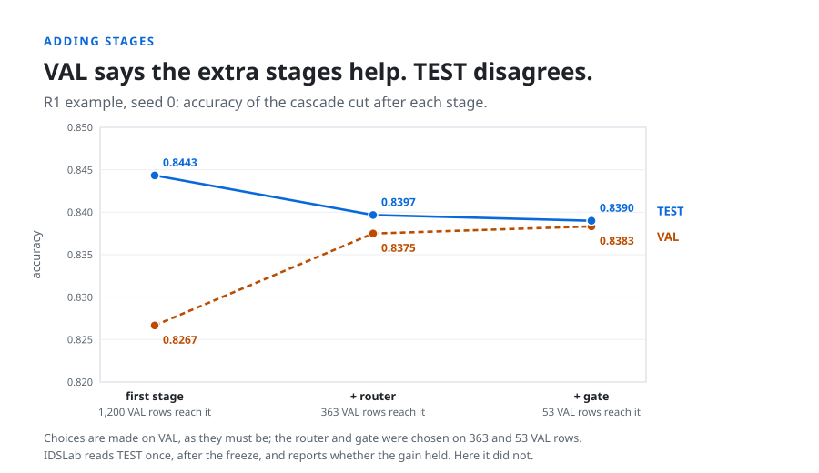
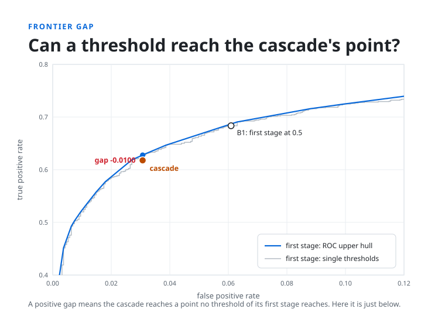
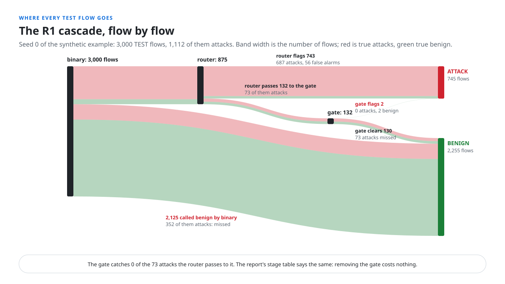
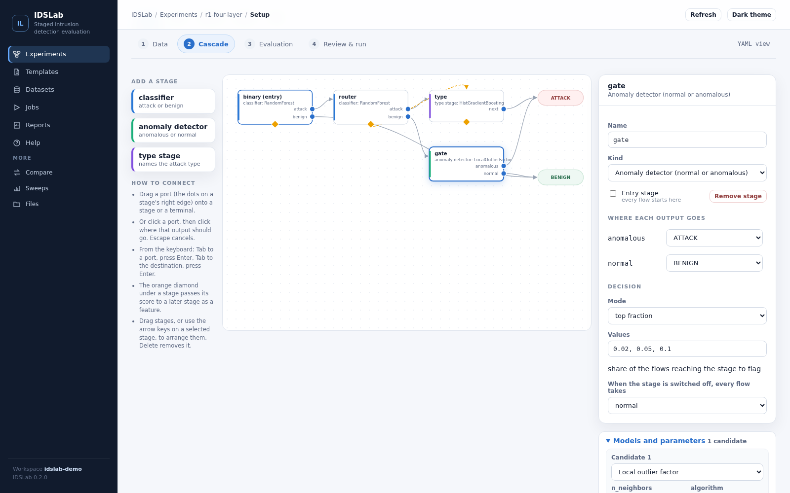
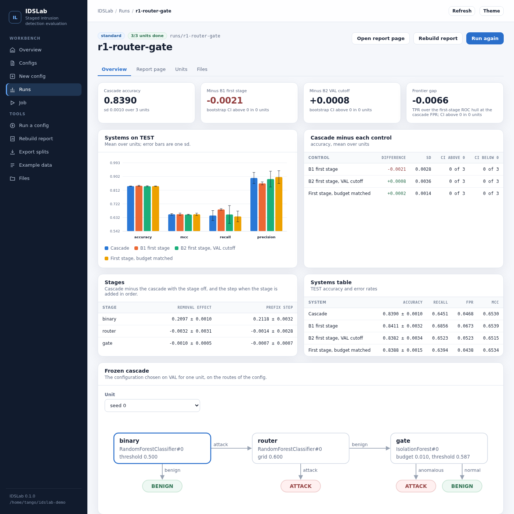

Does every stage earn its place?
IDSLab evaluates staged (cascade) network intrusion detection systems under one fixed protocol, and compares each design with its own first stage.
Describe the stages, the model in each and the routes between them in one YAML file, or draw them in the web builder. IDSLab fits the design, makes every choice on validation data, reads the test set once, and shows what each stage adds.
Cascade map, frozen on VAL
What each stage adds on TEST (3 seeds, synthetic data)
| binary | kept 3 of 3 | +0.210 | CARRIES THE RESULT |
| router | kept 2 of 3 | -0.003 | ADDS NOTHING HERE |
| gate | kept 2 of 3 | -0.001 | ADDS NOTHING HERE |
A cascade can look better without being better.
A staged IDS lets a first classifier see every flow and sends some of them to later stages: a second classifier, an anomaly detector, a type classifier. Gains over a single model are common in published designs, and easy to overstate.
Tuned on the test set
Thresholds and stage choices picked while looking at the data the result is reported on.
The wrong baseline
The cascade beats a different single model, not its own first stage tuned as carefully.
A threshold would do
The same gain could come from moving the first stage's threshold, with no extra stage at all.
Dead stages
Nobody checks what each stage contributes, so a stage that does nothing stays in the design.
One protocol for every design.
The same rules run for every cascade, so two designs, or two papers, compare on equal terms.
Describe
Stages, the model in each, decisions and routes: one YAML file, or the visual builder. Any acyclic graph.
Split
Per seed: FIT-base and CAL to fit and calibrate, VAL for every choice, TEST locked away.
Choose on VAL
Models, thresholds and budgets chosen stage by stage. Switching a stage off is always an option; ties go to off.
Read TEST once
The frozen cascade next to its first stage alone, with bootstrap intervals, over several seeds.
entry: binary stages: binary: # sees every flow kind: classifier candidates: [{class: RandomForestClassifier}] decision: {threshold: 0.5, off: benign} routes: {attack: router, benign: BENIGN} router: # keeps confident attacks kind: classifier decision: {grid: [0.5, 0.6, 0.7], off: attack} routes: {attack: ATTACK, benign: gate} gate: # trained on benign flows only kind: detector fit_on: benign decision: {budget: [0.01, 0.05], off: normal} routes: {anomalous: ATTACK, normal: BENIGN}

Three questions, every report.
Measured on the design above, on the synthetic example data that ships with IDSLab (idslab example).
Does the cascade beat its first stage alone?
The router and gate were chosen on VAL, where they helped. On TEST the cascade ends below its first stage. IDSLab reports the difference with paired bootstrap intervals and the spread over seeds.

Could a threshold do the same?
The frontier gap compares the cascade's detection rate with the best the first stage reaches at the same false alarm rate by moving its threshold. A positive gap means the stages reach a point no threshold can.

What does each stage do?
Every TEST flow's path is recorded. Here the router passes 73 attacks to the gate, and the gate catches none of them; switching it off costs nothing, and the report's stage table says so.

Draw the design. Get the config.
Drag stages onto a canvas, wire each output to a stage or a terminal, and set models, decisions and pipelines in a side panel. The server writes the YAML and validates it on every change.
- Ports and wires. Drag an output port onto a stage or onto ATTACK or BENIGN; an unrouted port shows in red.
- Score features. Drag a stage's score onto a later stage to use it as an input, out-of-fold on training rows.
- A model catalog. scikit-learn, XGBoost, LightGBM, PyOD and PyTorch, with parameter forms read from each class.
- Reads your data. Suggests the label, type and text columns from a sample of the file.
- Plain YAML out. The same file the command line runs; layout kept beside it.

From a template to a report, in the browser.
Each experiment shows its next step. Setup walks through data, cascade, evaluation and a run; jobs run the real command line, so a run from the browser and one from a shell resume each other.

Results read honestly
The cascade against the first stage alone, in percentage points, with the per-seed bootstrap read for you and no pooled interval made up.
Guided setup
Data, cascade, evaluation, review and run, on one draft shared with the YAML view; comments are never dropped without asking.
Local by design
Listens on 127.0.0.1, reads and writes only inside the workspace, refuses requests from other sites.
Built for the questions cascades raise.
Everything below runs from the same config, with the same protocol and controls.
Any staged design
Classifier, type and anomaly stages in any acyclic graph. Stages can re-check, clear alarms, name attack types or feed scores to later stages.
Any model
scikit-learn style estimators, XGBoost, LightGBM, PyOD, PyTorch, or your own class behind a small adapter.
Models trained elsewhere
Export the splits, train on a GPU, import the scores. IDSLab checks the file against its splits and rejects scores on rows the model trained on.
Unseen attacks
Hold out each attack family in turn, or test types never seen in training, and report recall on them.
Cost and latency
Choose by the cost of missed attacks and false alarms. See how many flows reach each stage and what the cascade costs per flow.
Honest selection
Greedy selection with an off option, a variant that keeps fixed stages on, and a joint check that measures what greedy missed.
Reports you can read
Markdown, JSON and a self-contained HTML page with the cascade map, controls, unseen-attack grid and per-seed configuration.
Reproducible runs
Every unit is fingerprinted by config, data, split, score files and version; finished seeds are reused only when all match.
Plugins
Packages add models, pipeline steps and objectives through an entry point; they appear in the builder and in configs.
A result you can inspect and rerun.
Each experiment writes a report page, Markdown and JSON aggregates, and per seed the chosen configuration, the selection trace, every TEST flow's path and the split ids.
- report.html one self-contained page, no scripts, no network
- summary.json per seed: choices, trace, controls, stage cost
- per_flow.parquet every TEST flow's scores, path and verdicts
- DONE the fingerprints a rerun is checked against
Free to use, study, change and share.
IDSLab is released under the GNU Affero General Public License, version 3 or later. Use it for research and teaching, read every rule it applies, and publish your changes under the same terms.
Test your own cascade.
Python 3.10 or newer; IDSLab installs from PyPI. The example writes synthetic flows and three reference designs, so the first run takes a minute. Step-by-step guides for Windows, macOS and GNU/Linux are in the install guide.
$ python3 -m venv .venv && source .venv/bin/activate $ pip install idslab $ idslab example demo # synthetic data, three reference designs $ idslab run demo/r1_router_gate.yaml --out demo/runs $ idslab dashboard --workspace demo --open # the builder and the results in the browser # Windows, PowerShell, in a virtual environment: programs are in .venv\Scripts > py -3.12 -m venv .venv; .\.venv\Scripts\pip install idslab > .\.venv\Scripts\idslab example demo > .\.venv\Scripts\idslab dashboard --workspace demo --open